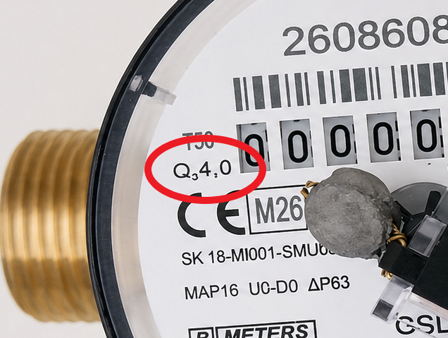
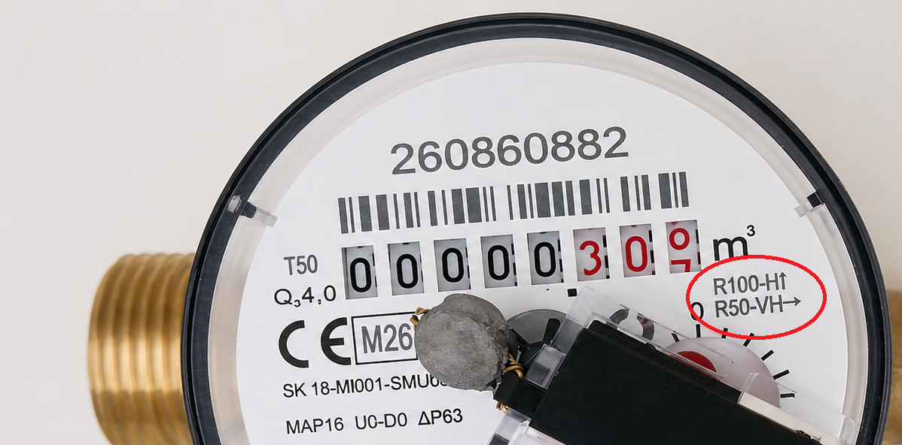

W tym miejscu pojawią się poradniki, materiały i kolejne etapy budowy.
01
Wymiary i oznaczenia
Nie bez powodu pierwszą sekcją jest opis wymiarów. Bez poznania zasad unifikacji trudno dobrać odpowiednie materiały.
Chodzi nie tylko o zakup właściwego elementu, ale również o uniknięcie nietrafionej oferty. Niejasny opis aukcji może oznaczać, że sprzedający nie do końca wie, co sprzedaje.
ISO 228-1 — jak oznaczenie gwintu G ma się do rzeczywistych wymiarów?
ISO 228-1 opisuje rurowe gwinty walcowe oznaczane literą G. Liczba przy oznaczeniu, na przykład G1, nie oznacza średnicy gwintu równej 1 calowi (25,4 mm).
Skąd bierze się ta różnica?
Oznaczenia gwintów rurowych mają charakter historyczny. Rozmiar calowy odnosił się pierwotnie w przybliżeniu do nominalnej średnicy wewnętrznej rury, natomiast gwint wykonywano na jej zewnętrznej powierzchni.
G1 ≠ Ø25,4 mmRzeczywista średnica zewnętrzna gwintu G1 wynosi około Ø33,25 mm.
Popularne rozmiary gwintów według ISO 228-1
Gwint ISO 228-1
Rozmiar nominalny
Średnica zewnętrzna gwintu
G1/8
1/8"
≈ 9,73 mm
G1/4
1/4"
≈ 13,16 mm
G3/8
3/8"
≈ 16,66 mm
G1/2
1/2"
≈ 20,96 mm
G3/4
3/4"
≈ 26,44 mm
G1
1"
≈ 33,25 mm
G1 1/4
1 1/4"
≈ 41,91 mm
G1 1/2
1 1/2"
≈ 47,80 mm
G2
2"
≈ 59,61 mm
Przykład — G1
Gwint G1 według ISO 228-1 ma następujące parametry:
średnica zewnętrzna: ≈ 33,25 mm
liczba zwojów: 11 TPI
skok: ≈ 2,309 mm
kąt gwintu: 55°
rodzaj: gwint walcowy
Mierząc suwmiarką zewnętrzną średnicę męskiego gwintu G1, otrzymamy więc około 33 mm, a nie 25,4 mm.
Co oznacza DN?
DN jest określonym w ISO 6708 oznaczeniem nominalnego rozmiaru elementów instalacji rurowej. Składa się z liter DN i bezwymiarowej liczby całkowitej, która jest tylko pośrednio związana z rzeczywistym wymiarem w milimetrach.
DN można traktować jako klasę rozmiaru przewodu i współpracujących z nim elementów, takich jak zawory, wodomierze, przepływomierze, filtry czy pompy.
Dwie rury oznaczone jako DN25 mogą mieć różne rzeczywiste średnice wewnętrzne, a mimo to należeć do tej samej nominalnej klasy rozmiaru instalacji.
Jeżeli dokumentacja wiąże wartość nominalną konkretnie ze średnicą wewnętrzną, może używać oznaczenia DN/ID (Inside Diameter). Dla powiązania ze średnicą zewnętrzną stosuje się DN/OD (Outside Diameter). Samo DN nie mówi, który rzeczywisty wymiar należy zmierzyć.
DN a NPS
NPS (Nominal Pipe Size) jest północnoamerykańskim systemem nominalnych rozmiarów rur, a DN jego międzynarodowym odpowiednikiem metrycznym. Przykładowo NPS 1 odpowiada DN25, a NPS 1 1/4 — DN32. Jest to przyporządkowanie klas rozmiaru, nie bezpośrednie przeliczenie cali na milimetry.
DN mówi, jakiej wielkości jest instalacja, natomiast oznaczenie G określa konkretny gwint przyłączeniowy.
DN a gwint G
W typowych instalacjach można spotkać następujące zestawienia:
Typowe zestawienie DN i gwintów rurowych
DN
Typowy gwint rurowy
Ø zewnętrzna gwintu
DN8*
G1/4
13,16 mm
DN10
G3/8
16,66 mm
DN15
G1/2
20,96 mm
DN20
G3/4
26,44 mm
DN25
G1
33,25 mm
DN32
G1 1/4
41,91 mm
DN40
G1 1/2
47,80 mm
DN50
G2
59,61 mm
* Oznaczenie DN8 występuje w katalogach i niektórych standardach branżowych, ale nie znajduje się na liście preferowanych wartości DN w ISO 6708.
Podane średnice dotyczą zewnętrznej średnicy gwintu G, a nie zewnętrznej średnicy rury. Są to różne wymiary określone przez różne standardy, nawet jeśli ich wartości bywają do siebie zbliżone.
Tabela pokazuje typowe przyporządkowanie gwintu do rury o danym DN, a nie uniwersalną zasadę dla każdego urządzenia. Oznaczenie DN nie definiuje samodzielnie gwintu przyłącza — zawsze sprawdzaj rysunek wymiarowy konkretnego produktu.
Dlaczego można spotkać oznaczenie „DN32 / G1”?
Według typowego przyporządkowania DN32 odpowiada gwintowi G1 1/4, natomiast G1 odpowiada DN25. Zapis „DN32 / G1” nie potwierdza więc zgodności wymiarowej. Może opisywać dwie różne cechy urządzenia, redukowane przyłącze albo być błędem w ofercie. Bez rysunku wymiarowego producenta należy traktować go jako niejednoznaczny.
Aby sprawdzić mechaniczną zgodność połączenia, zweryfikuj:
rodzaj i rozmiar gwintu,
jego średnicę i skok,
sposób uszczelnienia,
dokumentację wymiarową producenta.
Praktyczny przykład — DN20 i gwint G1 w wodomierzu GSD8-R
Poniżej znajduje się fragment dokumentacji wodomierza BMETERS GSD8-R. W tabeli „Wymiary i waga” dla wariantu DN20 producent podaje w wierszu „D Gwint” rozmiar 1″.
DN20 określa nominalny rozmiar wodomierza, natomiast „D Gwint = 1″” oznacza przyłącze z gwintem G1 wykonanym według EN ISO 228-1. Litera D jest tutaj nazwą wymiaru na rysunku technicznym, a nie informacją, że średnica gwintu wynosi 1 cal.
DN20 / G1 / Ø≈33,25 mmPomiar suwmiarką zewnętrznej średnicy gwintu tego wodomierza daje około 33,25 mm. Wynik zgadza się z wymiarem gwintu G1 i ponownie pokazuje, że oznaczenia DN20 oraz 1″ nie są wymiarami, które należy odczytać bezpośrednio jako 20 mm lub 25,4 mm.
Najważniejsza zasada
G1 ≠ Ø25,4 mmG1 jest nominalnym oznaczeniem gwintu rurowego, którego rzeczywista średnica zewnętrzna wynosi około 33,25 mm.
Identyfikując nieznany gwint, zmierz jego rzeczywistą średnicę i porównaj ją z tabelą odpowiedniego standardu. Nie przeliczaj oznaczenia calowego bezpośrednio według zależności 1" = 25,4 mm.
02
Wodomierz / przepływomierz
Istnieje wiele urządzeń służących do pomiaru przepływu i objętości cieczy. Różnią się budową, zasadą działania oraz sposobem przekazywania wyniku.
Wynik może być dostępny na mechanicznym liczydle, jako impulsy elektryczne, przez przewodową magistralę M-Bus, bezprzewodowo przez wM-Bus albo za pomocą innych interfejsów. Autolejek korzysta z prostego i popularnego rozwiązania: zlicza impulsy elektryczne.
Celem tego rozdziału nie jest opisanie każdego typu wodomierza i przepływomierza. Chodzi o poznanie najważniejszych cech, które pozwolą wybrać urządzenie pasujące do konkretnej instalacji.
Wodomierz czy przepływomierz?
Wodomierz jest przeznaczony do wody i zazwyczaj pokazuje jej łączną zużytą objętość. Przepływomierz to szersza kategoria urządzeń: może mierzyć różne ciecze, przepływ chwilowy, objętość całkowitą albo oba parametry. Dla Autolejka najważniejsza jest nie nazwa urządzenia, lecz zgodność medium, zakresu pracy i wyjścia impulsowego.
Wyjście impulsowe — podstawowy warunek
Autolejek wymaga wodomierza lub przepływomierza, który generuje co najmniej 1 impuls na każdy 1 litr zmierzonej cieczy.
≥ 1 imp./lUrządzenie o stałej 1 impuls na 10 litrów ma rozdzielczość 10 litrów i nie nadaje się do dokładnego odmierzania przez Autolejka — taką ofertę należy odrzucić.
Liczba impulsów określa rozdzielczość odczytu, ale sama nie gwarantuje dokładności pomiaru. Dokładność, powtarzalność i zakres przepływu trzeba sprawdzić osobno w dokumentacji producenta.
Urządzenie musi pasować do cieczy
Wodomierz zaprojektowany do wody nie musi poprawnie ani bezpiecznie mierzyć oleju, nawozu płynnego czy innej cieczy. Znaczenie mają między innymi lepkość, temperatura, właściwości chemiczne oraz zgodność cieczy z materiałem korpusu, uszczelnień i elementów pomiarowych.
Jest to przepływomierz wyporowy. Różnica ciśnień wprawia w ruch dwie zazębiające się owalne zębatki. Między zębatkami a obudową zamykane są porcje cieczy o określonej objętości, przenoszone następnie od wlotu do wylotu. Zliczenie obrotów pozwala obliczyć przepuszczoną objętość. Taka konstrukcja dobrze radzi sobie z cieczami o większej lepkości, na przykład olejem przekładniowym.
Woda zimna i ciepła
Wodomierze występują w wersjach przeznaczonych do wody zimnej i ciepłej. Różnią się dopuszczalną temperaturą pracy oraz materiałami elementów wewnętrznych i uszczelnień. Nie wybieraj urządzenia wyłącznie na podstawie koloru obudowy — sprawdź klasę temperaturową i maksymalną temperaturę medium w karcie katalogowej.
Jeżeli urządzenie ma pracować z wodą przeznaczoną do spożycia lub celów użytkowych, sprawdź również wymagane atesty i dopuszczenia materiałów do kontaktu z taką wodą.
Omówienie wodomierzy na przykładzie BMETERS GSD8-R
Jeżeli wiemy już, jaki rodzaj cieczy będziemy odmierzać, kolejnym krokiem jest określenie wymaganego przepływu. Na przykładzie wodomierza BMETERS GSD8-R zobaczymy, jak odczytać najważniejsze oznaczenia i jak pozycja montażu wpływa na minimalny przepływ pomiarowy.
Literą Q oznacza się strumień objętości, czyli ilość wody przepływającą przez wodomierz w określonym czasie.
Q4
Przepływ przeciążeniowyNajwyższy przepływ, przy którym wodomierz może działać prawidłowo przez krótki czas. Nie jest przeznaczony do ciągłej pracy w tym punkcie.
Q3
Przepływ ciągłyNajwyższy przepływ, przy którym wodomierz może pracować w sposób ciągły w znamionowych warunkach użytkowania.
Q2
Przepływ pośredniGranica między dolnym i górnym zakresem pomiarowym, dla których obowiązują różne dopuszczalne błędy pomiaru.
Q1
Przepływ minimalnyNajniższy przepływ, przy którym wodomierz ma jeszcze mierzyć w granicach dopuszczalnego błędu. Jego wartość zależy między innymi od klasy R i pozycji montażu.

Oznaczenie Q3 4,0 na tarczy wodomierza.
Oznaczenie Q3 4,0 oznacza przepływ ciągły 4,0 m³/h, czyli 4000 l/h. Przy takim przepływie wodomierz może pracować ciągle w znamionowych warunkach. Dla tego wariantu GSD8-R karta katalogowa podaje Q4 = 5 m³/h.
Nie każdy producent używa na pierwszym planie oznaczeń Q1–Q4. Przykładowo SEA YF-G1 ma podany wprost zakres do 100 l/min. Niezależnie od sposobu prezentacji zawsze sprawdź kartę katalogową konkretnego wariantu urządzenia albo poproś sprzedawcę o jej udostępnienie.
Kolejny krok — pozycja montażu
Tak, montaż — a precyzyjniej orientacja wodomierza — należy sprawdzić przed obliczeniem przepływu minimalnego. Ten sam wodomierz może mieć inną klasę R (o niej za moment), a więc inne Q1, zależnie od położenia korpusu i tarczy.
Duża strzałka pokazuje kierunek przepływu wody. Symbol przy literze H opisuje położenie tarczy wodomierza względem pionu. H oznacza rurę poziomą (horizontal), a V — rurę pionową (vertical).
H↑orientacja pozioma, tarcza wodomierza skierowana ku górze,
H→orientacja pozioma, tarcza obrócona na bok o 90°,
H↓orientacja pozioma, tarcza skierowana ku dołowi,
V↑orientacja pionowa, strumień wody skierowany ku górze.
W instalacji Autolejka dla pozycji V przyjmujemy tylko przepływ ku górze. Nie montujemy wodomierza tak, aby woda płynąca grawitacyjnie w dół obracała turbinę lub wirnik. Przepływ powinien być wymuszany przez ciśnienie — do tego zagadnienia wrócimy w kolejnych rozdziałach.

Oznaczenia pozycji i klas R na tarczy badanego GSD8-R.
Na pokazanym egzemplarzu widnieją dwa warianty dokładności montażowej: R100 dla H↑ oraz R50 dla V↑ i H→. Ogólna instrukcja pokazuje również pozycję H↓, ale tarcza tego konkretnego wodomierza jej nie wymienia.
Spostrzegawczy czytelnicy zauważyli zapewne, że na tarczy widnieją również oznaczenia U0 oraz D0 — do nich wrócimy później.
Przepływ minimalny — obliczamy Q1
Współczynnik R jest stosunkiem przepływu ciągłego Q3 do przepływu minimalnego Q1. Dlatego:
R = Q3 / Q1czyliQ1 = Q3 / R
Q1 dla GSD8-R z Q3 = 4,0 m³/h
Pozycja
R
Obliczenie
Q1
H↑
100
4,0 / 100
0,04 m³/h = 40 l/h
V↑ / H→
50
4,0 / 50
0,08 m³/h = 80 l/h
Zmiana pozycji z H↑ na V↑ lub H→ podwaja minimalny przepływ Q1 z 40 do 80 l/h. Wodomierz nadal może mierzyć poniżej Q1, ale producent nie gwarantuje wtedy zachowania dopuszczalnego błędu.
Krzywa pokazuje, że błąd nie jest jednakowy w całym zakresie. Między Q1 a Q2 obowiązuje szerszy przedział dopuszczalnego błędu, a od Q2 do Q4 — węższy. Poniżej Q1 błąd może gwałtownie rosnąć, dlatego właściwa pozycja montażu i znajomość rzeczywistego minimalnego przepływu są tak istotne.
Przykład — przepływomierz SEA YF-G1
SEA YF-G1 jest turbinowym czujnikiem przepływu wody. Ma przyłącza z gwintem G1 i nominalny rozmiar DN25.
Najważniejsze parametry SEA YF-G1 z karty katalogowej
Zasilanie
DC 5–24 V
Maksymalny prąd pracy
15 mA (DC 5 V)
Zakres przepływu i deklarowana dokładność
1–100 l/min, ±5%
Maksymalna temperatura cieczy
80°C
Maksymalne ciśnienie
1,75 MPa
Wypełnienie sygnału
50% ±10%
Charakterystyka impulsowa
f [Hz] = 1 × Q [l/min] ±3%
Nominalna liczba impulsów
≈ 60 imp./l
Ze wzoru wynika, że przy przepływie 30 l/min częstotliwość nominalna wynosi 30 Hz. W ciągu minuty czujnik wygeneruje 1800 impulsów dla 30 litrów, czyli nominalnie 60 impulsów na litr. YF-G1 spełnia więc wymaganie Autolejka wynoszące co najmniej 1 impuls na litr.
Dlaczego ustawienie kalibracji może być problematyczne?
Nominalne 60 impulsów na litr jest tylko wartością początkową. Dokumentacja deklaruje dokładność pomiaru ±5%, a przy charakterystyce impulsowej dodatkowo podaje tolerancję ±3%. Nie jest przy tym jasne, czy są to niezależne błędy, dlatego nie należy ich mechanicznie sumować. Oznacza to jednak, że wpisanie jednego współczynnika z karty katalogowej nie zapewni dokładnego wyniku dla każdego egzemplarza i całego zakresu przepływu.
Pod nazwą YF-G1 można znaleźć oferty podające różne charakterystyki, między innymi około 60 lub 64,8 impulsu na litr. Nie kopiuj współczynnika z przypadkowej aukcji — sprawdź dokumentację konkretnego wariantu i skalibruj posiadany egzemplarz.
Kalibrację wykonaj w docelowej instalacji:
przepuść dokładnie odmierzoną objętość wody i zapisz liczbę impulsów,
oblicz współczynnik: liczba impulsów ÷ liczba litrów,
powtórz pomiar kilka razy przy małym, typowym i dużym przepływie,
porównaj wyniki — jeżeli współczynnik wyraźnie zmienia się z przepływem, jedna stała kalibracyjna nie zapewni wysokiej dokładności.
WniosekSEA YF-G1 zapewnia dobrą rozdzielczość impulsową, ale przy podanych tolerancjach jego precyzyjna kalibracja będzie problematyczna. Nadaje się do zastosowań, w których akceptowalny jest błąd rzędu kilku procent; przed użyciem do dokładnego odmierzania trzeba sprawdzić konkretny egzemplarz w rzeczywistych warunkach pracy.
To pomoże Ci wybrać odpowiedni przepływomierz
Jaka ciecz będzie mierzona?Sprawdź lepkość, temperaturę, czystość i zgodność materiałową.
Jaki będzie przepływ?Ustal przepływ minimalny, typowy i maksymalny. Wszystkie powinny mieścić się w zakresie pracy urządzenia.
Czy będzie to woda zimna czy ciepła?Dobierz odpowiednią klasę temperaturową wodomierza.
Ile impulsów przypada na litr?Autolejek wymaga co najmniej 1 impulsu na litr; większa liczba daje lepszą rozdzielczość odmierzania.
Czy urządzenie pasuje do instalacji?Sprawdź gwint, średnicę nominalną, ciśnienie, kierunek przepływu, pozycję montażu i wymagany odcinek prosty.
Najpierw dobierz urządzenie do cieczy i przepływu, następnie sprawdź wyjście impulsowe, a na końcu wymiary przyłącza. Sam pasujący gwint nie oznacza, że przepływomierz nadaje się do danej instalacji.
Wniosek z praktykiZ moich obserwacji wynika, że do odmierzania wody wodomierze takie jak BMETERS GSD8-R są znacznie przyjaźniejsze dla użytkownika niż przepływomierze o dużej deklarowanej niedokładności. Jasno określona charakterystyka metrologiczna i impulsowanie 1 l/imp sprawiają, że nie trzeba męczyć się z indywidualną kalibracją. Wystarczy poprawnie ustawić parametr impulsowania i zamontować urządzenie zgodnie z dokumentacją. Różnica w cenie nie jest przy tym duża: YF-G1 kosztuje orientacyjnie około 70 zł, a GSD8-R około 180 zł.
Uwaga na zakłóceniaŚwiat nie jest idealny, dlatego w praktycznej instalacji trzeba również uwzględnić zakłócenia elektromagnetyczne, które mogą powodować fałszywe impulsy. Systemu nie należy montować w pobliżu spawarki, urządzeń o dużym poborze mocy ani ich przewodów zasilających. Przewód impulsowy także nie powinien być zbyt długi — w instalacjach Autolejka zalecam maksymalnie 2 m.
03
Elektrozawór
Kiedy użyć elektrozaworu?
Elektrozawór jest naturalnym wyborem, gdy zamierzasz nalewać wodę z instalacji znajdującej się pod ciśnieniem, na przykład z kranu. Pozwala Autolejkowi rozpocząć i zatrzymać przepływ bez uruchamiania pompy.
Na co zwrócić uwagę?
Przed zakupem sprawdź nie tylko rozmiar przyłącza i dopuszczalne ciśnienie, lecz także parametry elektryczne cewki:
napięcie znamionowe,
pobór prądu lub moc cewki,
rodzaj zasilania i sterowania: AC albo DC,
stan spoczynkowy zaworu: normalnie zamknięty (NC) albo normalnie otwarty (NO),
dopuszczalny cykl pracy, w tym możliwość pracy ciągłej.
Często pomijanym parametrem jest czas pracy ciągłej. Nie każda cewka może pozostawać pod napięciem bez przerwy — nieodpowiedni elektrozawór będzie się przegrzewał i może ulec uszkodzeniu. Szukaj w dokumentacji informacji „100% ED”, „continuous duty” albo jednoznacznego dopuszczenia do pracy ciągłej.
Zawory impulsowe i bistabilne
Można spotkać elektrozawory, które nie wymagają ciągłego poboru prądu do podtrzymania stanu. Krótki impuls elektryczny przełącza taki zawór, a jego położenie podtrzymuje mechanizm bistabilny, magnes trwały lub — w niektórych konstrukcjach pilotowych — również różnica ciśnień cieczy. Sposób zamykania może wymagać drugiego impulsu, często o odwróconej polaryzacji.
Nie zakładaj jednak, że zwykły zawór pozostanie otwarty dzięki samemu przepływowi wody. Tryb impulsowy lub bistabilny musi być wyraźnie podany w jego dokumentacji, a sposób sterowania musi być zgodny z wyjściem Autolejka.
Zasilanie elektrozaworu z Autolejka
Autolejek może pracować z elektrozaworami DC o napięciu od kilku woltów do 32 V, sterowanymi przez ciągłe podanie napięcia. W praktyce napięcie zasilania całego systemu może odpowiadać napięciu znamionowemu cewki. Jeżeli wybierzesz elektrozawór 12 V DC, zastosuj zasilacz 12 V DC. Nietypowe napięcie, na przykład 18,2 V DC, również jest możliwe, o ile mieści się w zakresie Autolejka i jest zgodne ze wszystkimi zasilanymi elementami.
Autolejek ma również drugi przekaźnik, którym można przełączać obwód elektrozaworu AC. Przekaźnik nie jest źródłem napięcia, dlatego taki zawór wymaga oddzielnego, odpowiednio dobranego zasilania. Należy także sprawdzić dopuszczalne napięcie i prąd styków przekaźnika.
Cewka, pole magnetyczne i przepięcie
Cewka elektrozaworu jest elementem indukcyjnym. Gdy płynie przez nią prąd, wokół cewki powstaje pole magnetyczne, które przesuwa rdzeń i przełącza zawór. W polu tym zostaje zgromadzona energia. W chwili odłączenia zasilania pole gwałtownie zanika, a cewka — zgodnie z zasadą samoindukcji — próbuje podtrzymać dotychczasowy przepływ prądu.
Im szybciej prąd jest przerywany, tym większe napięcie może się wyindukować. Jego wartość opisuje zależność |u| = L · |di/dt|. Powstały krótki impuls może mieć napięcie wielokrotnie wyższe od napięcia zasilania, powodować iskrzenie na stykach przekaźnika, zakłócenia elektromagnetyczne, fałszywe impulsy w przewodach sygnałowych, a nawet uszkodzenie elektroniki.
Niektóre elektrozawory mają już wbudowaną diodę zwrotną lub inny element tłumiący. Należy to sprawdzić w dokumentacji. Cewka z wbudowaną diodą ma określoną polaryzację — zamiana przewodów może spowodować zwarcie. Jeżeli odpowiednie zabezpieczenie jest już zamontowane przy cewce, dokładanie drugiej równoległej diody zwykle nie jest potrzebne.
Zwykłej diody zwrotnej nie wolno podłączać równolegle do cewki AC, ponieważ przewodziłaby podczas jednej połówki przebiegu i spowodowała zwarcie. Dla zaworów AC stosuje się zabezpieczenia przeznaczone do napięcia przemiennego, na przykład układ RC albo właściwie dobrany warystor. Element zabezpieczający zawsze dobieraj do rodzaju cewki i zaleceń producenta.